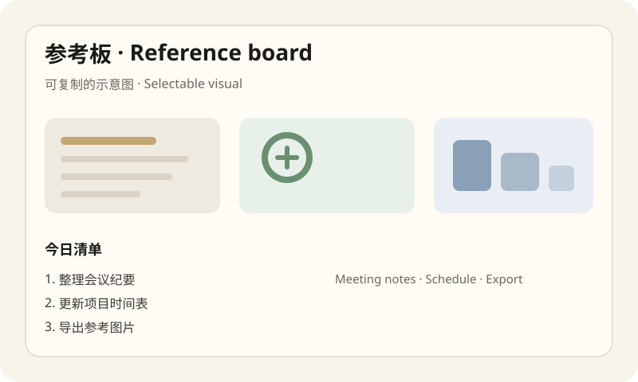

春日行程草案
这份页面用于演示：在透视圆内可以阅读、选中文字、点击按钮，并滚动查看更长内容。
A calm reference page. Inside the portal you can read, select text, click, and scroll.
上午
09:30 公园散步，记录光线与配色。带上水杯和相机，避免中午人流高峰。
09:30 Walk in the park. Note light and color. Bring water and a camera.

下午
14:00 咖啡馆整理笔记：列出三件今日必做事项，并导出一张配图备用。
- 写一段产品说明（中英各两句）
- 检查下载页链接是否可打开
- 导出配图并命名为 cover.png
材料清单
笔记本、充电线、耳机、墨镜。若下雨则改为室内画廊路线。
Notebook, cable, headphones, sunglasses. If rain: indoor gallery route.
小提示：选中任意文字可以复制；向下滚动可看更多段落。图片按住拖到前方投放区，松开 F8 完成投放。
晚间
19:30 简单复盘：今天最顺手的交互是哪一步？把感受写进备忘录即可。
20:15 休息，不安排新任务。
— 页面结束 · End of page —